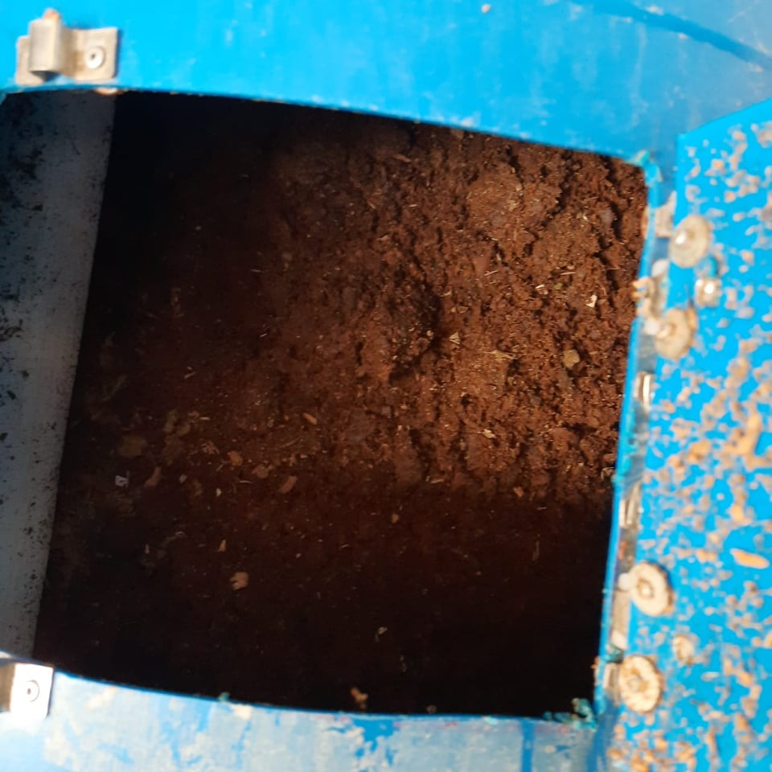

| Informacion de la composta | Haz tu propia composta | Por que la campaña |
|---|
HAZ TU PROPIA COMPOSTA
| El reciclaje de residuos orgánicos es importante a fin de reducir el impacto ambiental que tienen (generación de lixiviados, emisión de gases, mayores costes, etc.…). Como ya sabemos, los residuos orgánicos son todos aquellos desechos de origen vegetal y/o animal, que alguna vez estuvo vivo o fue parte de un ser vivo y que es susceptible de degradarse biológicamente. Una vez generados estos residuos, es necesario que sean separados del resto de los residuos para que puedan ser gestionados correctamente. Se pueden aprovechar los residuos vegetales del jardín y del hogar para hacer composta en lugar de tirarlos a la basura y mezclarlos con el resto de los residuos. La composta es un abono orgánico que servirá para mejorar la tierra de cultivo y como alimento para las plantas. La duración del proceso de compostaje puede oscilar, dependiendo de distintos factores (sistema, tecnología, disponibilidad de espacio, etc.), entre 10 y 16 semanas. | |
|
¿Qué incluir en la composta? Material seco:
|

|
|
Material húmedo:
|
 |
Fases de la compostaPrimera fase: Fase mesófila. Qué es el compost y cuáles son sus fases? El poder del suelo vivoEl proceso de compostaje se inicia a temperatura ambiente poco a poco, con el paso de entre pocas horas y dias, la temperatura de la mezcla va aumentando debido a la actividad de los macroorganismos. Si los microrganismos no tienen oxígeno y humedad, deja de actuar, la mezcla acaba enfriándose y el proceso de compostaje se frena. El objetivo es alcanzar entre 50 y 70 grados centígrados. |
 |
|
Segunda fase: fase termófila o de higienización.
Una vez superando los 45 grados, los organismos que se desarrollan a estas temperaturas, los llamamos mesófilos, desaparecen y son remplazados por microorganismos que soportan hasta 100 grados, los termófilos. Esta temperatura se mantiene mientras continua el proceso de descomposición de la materia orgánica y puede durar meses. Las altas temperaturas contribuyen a la higienización de la mezcla, ya que destruyen cualquier tipo de contaminante biológico. |
|
|
Tercera fase mesófila o fase de enfriamiento.
En esta fase, más cercana a temperatura ambiente, continua la descomposición y los organismos mesófilos se reactivan. |
 |
| Cuarta fase: fase de maduración.
Tras un periodo de enfriamiento, una vez la producción del compost se ha completado, llegando el momento de maduración. Esta última fase del proceso se produce a temperatura ambiente y permite la consolidación de nuevas moléculas. Durante varios meses, el compost madura y suma nuevas poblaciones microbianas, asi como nuevos grupos de organismos como anélidos, ácaros o insectos que completan la transformación. Estas fases marcadas por el perfil térmico del proceso se repiten siempre sea para la producción de compost en casa como para el compostaje industrial. Los domésticos son con postores pequeños en los que la aireación se realiza de forma pasiva. Suele ser un poco lento pero eficiente, pero el resultado puede ser muy bueno. |
|